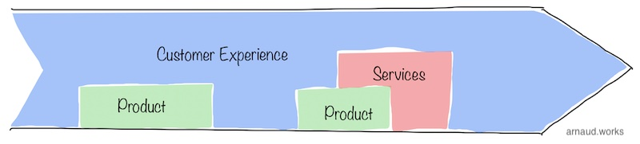

The organization you design will ultimately be the infrastructure that delivers what your customers want. This probably reads super obvious but that's worth keeping in mind whenever you look at a change: Does this change improve our ability to deliver what our customers want?
I covered a lot of the high level in the trifecta, but here I want to dive deeper into the structure model I use outside of engineering.
This is important to fully grasp - including all the details and subtleties - because ultimately, the frame is just here to hold together a culture that defines everything else.
With the right culture, your teams spend less time arguing about what to do, how far to take things, what's acceptable, etc.
So we start by defining roles, and we give them names to summarize what they are.
Product is where the answer of what should we work on next comes from. The org itself can - and often does - include all the rest. That's a good model when you want a product driven company, as in, we ship iterations on internal creations to customers opposed to building one-off external projects.
Now when I say product here, I don't necessarily mean something you put in a box, or you download, or you pick off a shelf. It can be a complete solution that includes services, subscriptions, hardware and SLAs. A product is a complete set of capabilities your team has designed and developed in order to bring value to a customer.
Regardless, this team defines the requirements - not in a silo -; advocates for the customers; bridge the different teams and perspective.
In the product role, you are to actively drive a biased compromise that benefits the customer. This is this 'mediation' position and final decision responsibility that justifies product to include all the other functions.
I tend to use Project and Program as a definition of the scope, but functionally they are very similar. A project is an isolate-able chunk of work. A Program is the coordination of multiple projects and/or multiple parties - usually for integration or to build a bigger product.
Program is a structuring role. You are to create a framework that clarifies next steps for everyone according to a plan or an end result that Product will set with Engineering.
This often comes out with schedules, tooling, processes, driving meetings and a lot of communication. Program isn't a controlling function. Program assumes a supporting function. This makes a huge difference because when Program identifies an issue, to maintain the appreciation and cooperation of the rest of the participants, Program doesn't address issues directly beyond collecting new information against previously set expectations. Instead, Program will bring the information and escalate to the different branches (and communicate).
For instance, if the engineering team is slipping in their schedule because product keeps dumping new requirements, Program will collect said info, and demonstrate the problem to the N+1 of Product/Engineering. Similarly, if execution is getting off tracks because engineering is over building, Program will present the situation to the engineering leadership to address.
When Program raises a problem, they aren't presenting it from a perspective of an expected action to correct. They are raising something that may or may not need correction. Accepting this dual outcome is essential for Program to remain efficient and work well in a creative product environment because as you build new things, you may change your mind in the timeline and scope as the team discovers new constraints. Program is not to decide what should be done. They can advise of course, but Product and Engineering will decide.
So best Program individuals are meticulous, organized, communicate well and concisely, and have strong soft skills that always maintains their supporting role.
Their leadership needs to protect them by always presenting them in a position where they don't create conflict, they resolve it by identifying it.
Delivery is very much like Program with a big nuance: it is a controlling function as much as a supporting function.
They are here to be the metronome of the movement. They are here to call out slippage directly. They are here to make sure things move, no matter what.
Delivery will call out execution with individual contributors against agreed upon schedules and scope.
This model provides a lot of efficiency because the time spent on escalating every potential problem is reduced dramatically, but Delivery as such only works really well in projects that have incredibly well-defined requirements (so rarely in product-driven companies).
Best delivery people have all the Program skills I mentioned above plus an assertive behavior. Because they will be left to handle deep technical conversations, they also need to be well-supported by the Engineering and Product leadership.
This is why it's incredibly important that you understand why you roll out a given model, and explain it to the teams why it benefits the company.
If you place a Delivery model in a product centric company, you will likely create a toxic environment with engineering. If you use a program management structure as I defined it above in a project driven company, you will likely have slippage in deliveries.
Customer Support, Success and Experience are usually blended in as most people don't understand the differences and aren't really interested in it. They aren't invested because this part of the organization is often seen a cost center, and not an integral part of the product.
That's a big mistake because all three have different purposes and your customers are paying attention.
Functionally, you can blend them all in one team that has any of the three names, but you must appreciate the roles and their goals.
Customer Experience includes basically everything your customer will go through as they are on-boarding, using, troubleshooting their way to the value your product offers.

Most teams approach it from a reactionary standpoint, but if you can have a proactive stance, you will be able to provide a unique value most of your competition is neglecting.
Customer Experience is the fallback coordination team that defends a line of principle set by the product culture of the company. They start with a defined bar to achieve on the overall experience and map the entire journey.
As they go, they identify hand-over points to other teams. For instance, the presentation of the product on the website often falls to Product Marketing; the product development and features goes to Product, support processes goes to IT/Customer support, etc.
They go through the journey in a mind simulation to identify anything and everything that goes in the way of improving the experience for the end user.
This also includes all internal improvements that can be done. For instance, developing self-service features in the apps; rolling out AI-based chatbot for common questions; mobile app for customer support tickets handling to bring odd-hours support on the go. The list goes on.
A good customer experience team will always start by defining the entire user journeys but will also map out countless sub-journeys for a specific goal the customer is trying to achieve. I personally like flow charts, ideally in Figma or the tool that will also cover the product design. This way, it allows the back and forth conversation that happens as you shape it to stay within the key tool for the exercise, and it allows to bring UI as visual reference.
Customer Success came up as a refreshing approach to support but these days it's way too often used as a lip service on top of regular customer support. The essence of it still remains valuable. Create a proactive approach to accompany your customers in adopting your product in order to have a good and successful start.
In the context of a proper customer experience, this can be easily captured and distributed among multiple roles.
Product can have an increased focus on intuitivity and features that will anticipate issues. They can increase content creation, tutorials, training materials etc.
Marketing can build pipeline of information to check on the customers based on their on-boarding.
Pre-sales can incorporate processes and knowledge on best practices to fluidify the on-boarding.
The list goes on and is only limited by your creativity.
Customer Support is the very last place your customer should end up. That's because in a high quality product experiences, customers should have been able to work around their problems using any other methods than to talk to someone.
This particular perspective on customer support is very much lost on so many companies.
Most companies will end up convinced they have a customer support problem, but in the end they really have an 'everything else' problem.
Customer Support isn't rocket science. You leverage trained individuals to handle the moments customers ends up outside the carved out paths. So if this happens often, it's because you didn't carve out enough paths.
When you approach a customer support team for their output problems, they will most likely answer from the perspective of handling the load of people coming out of the paths, not from the perspective of challenging if these paths should have been carved.
That's also why customer experience is so important in addition to customer support. That's why your customer support team should be small. That's why you should listen to the patterns they identify when addressing customers.
Give them the tools to be efficient, place them in the center of the product building process.